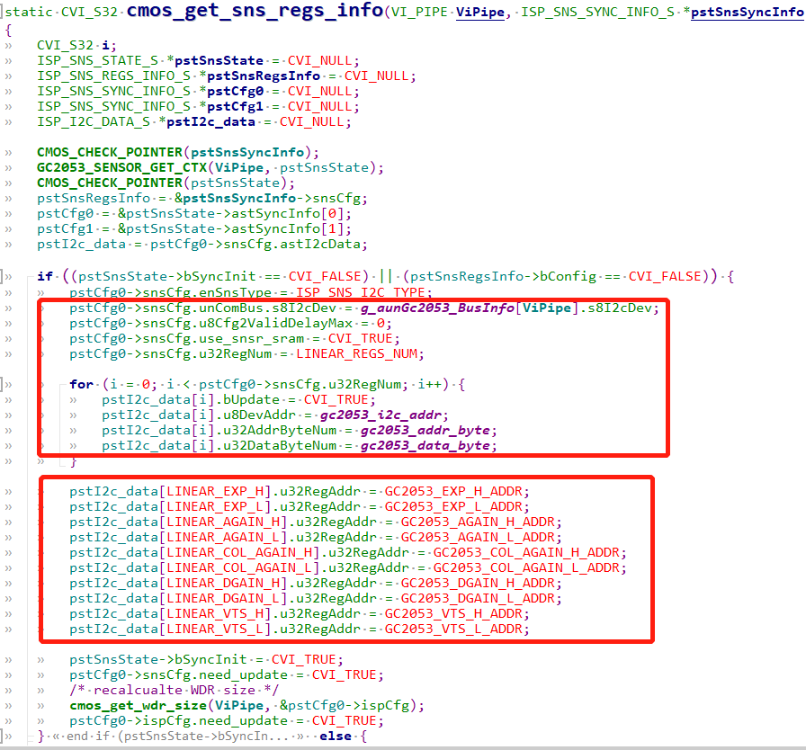
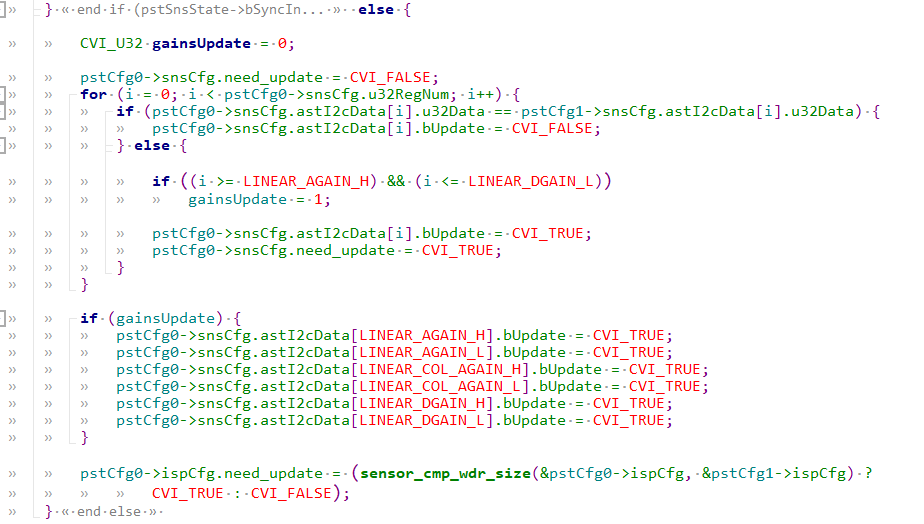

7. ISP Basic Functions¶
SensorDriverFunctionthe corresponding contentoperation callbacksthe corresponding content。the corresponding contentsectionthe corresponding contentusethe corresponding contentSensor datasheetthe corresponding contentDescriptionISP Callbacksthe corresponding contentBasicFunction。tuningISPRelatedcallbackthe corresponding content，the corresponding contentOpenthe corresponding content SAMPLE_COMM_ISP_Run , xxx_default_reg_initthe corresponding contentcall。
7.1. Development Flow¶
the corresponding contentISP Basic Functionscallbacks
pfn_cmos_sensor_init
pfn_cmos_sensor_exit
pfn_cmos_sensor_global_init
pfn_cmos_set_image_mode
pfn_cmos_set_wdr_mode
pfn_cmos_get_isp_default
pfn_cmos_get_sns_reg_info
7.2. Precautions¶
pfn_cmos_sensor_init： useSensorthe corresponding contentInterface(I2C/SPI)the corresponding content.
the corresponding contentNotethe corresponding contentInterfacethe corresponding content.
the corresponding contentAERelatedthe corresponding contentCallbacksthe corresponding contentsensor initthe corresponding content, the corresponding contentsensorthe corresponding contentOutputDatathe corresponding contentSensor AEthe corresponding content。
the corresponding contentxxxx_sensor_ctrl.c the corresponding contentxxxx_default_reg_init。
pfn_cmos_sensor_exit： Closeusethe corresponding contentInterface。
pfn_cmos_sensor_global_init： InitializesensorDriverParameter。
pfn_cmos_set_image_mode： the corresponding contentsensorOutputthe corresponding contentformat。SensorDriverthe corresponding contentselectthe corresponding contentResolutionthe corresponding contentOutputformat。
pfn_cmos_set_wdr_mode： the corresponding contentsensorOutputYesNothe corresponding contentWDRmode。
pfn_cmos_get_isp_default： the corresponding contentsensorRelatedthe corresponding contentISPParameter。
pfn_cmos_get_sns_reg_info： the corresponding contentSensorDriverthe corresponding contentAEthe corresponding content。the corresponding contentAEthe corresponding contentSensorOutputthe corresponding contentimage，
the corresponding contentAE callbacksthe corresponding content，SensorDriverthe corresponding contentWritesensorthe corresponding content，the corresponding contentYesthe corresponding contentmodifythe corresponding content；
Firmwarethe corresponding contentpfn_cmos_get_sns_reg_infoobtainthe corresponding contentinformationandthe corresponding contentkernel spacethe corresponding contentISPDriver。
ISPDriverthe corresponding contentWritesensorthe corresponding content。
the corresponding contentSensorthe corresponding contentWDROutputformat，the corresponding contentimagethe corresponding contentSize、Cropthe corresponding contentMIPI-RXthe corresponding contentExposurethe corresponding content。
SensorDriverthe corresponding content，ISPDriverthe corresponding contentModule。
pfn_cmos_get_sns_reg_infothe corresponding content：
typedef struct _ISP_SNS_SYNC_INFO_S {
ISP_SNS_REGS_INFO_S snsCfg;
ISP_SNS_ISP_INFO_S ispCfg;
ISP_SNS_CIF_INFO_S cifCfg;
} ISP_SNS_SYNC_INFO_S;
snsCfgTablethe corresponding contentneedthe corresponding contentsensorthe corresponding content，ispCfgTablethe corresponding contentneedthe corresponding contentCropinformation，cifCfgTablethe corresponding contentneedthe corresponding contentmipi-rxthe corresponding content.
the corresponding contentneed_updatethe corresponding contentTruethe corresponding content，Tablethe corresponding contentDataneedISPthe corresponding contentu8DelayFrmNumthe corresponding content。
snsCfgthe corresponding contentbUpdatethe corresponding contentYesNoneedthe corresponding content。
the corresponding contentcallpfn_cmos_get_sns_reg_infothe corresponding contentConfigurationi2cRelatedthe corresponding content， the corresponding contentregisterAddressthe corresponding content、Getsns、crop、wdr sizethe corresponding contentinformation，as followsFigure。
{kind=link}

the corresponding contentcallpfn_cmos_get_sns_reg_infothe corresponding contentYesthe corresponding contentmodifythe corresponding contentAE registerthe corresponding content，as followsFigure。
{kind=link}

the corresponding contentAEthe corresponding contentcall isp_snsSync_info_setthe corresponding contentAEdataupdatathe corresponding contentISP driver，ISP driverthe corresponding contentdelayFrmNumthe corresponding contenti2c，the corresponding contentsensorthe corresponding content。
pfn_cmos_get_isp_black_level：
the corresponding contentsensorthe corresponding contentdefaultthe corresponding contentblack leve offset，For exampleimx577，the corresponding content。